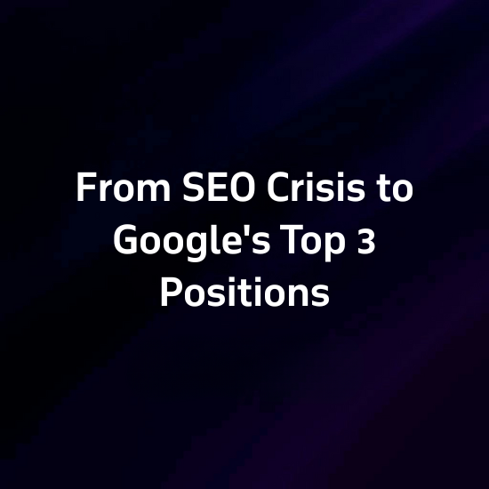
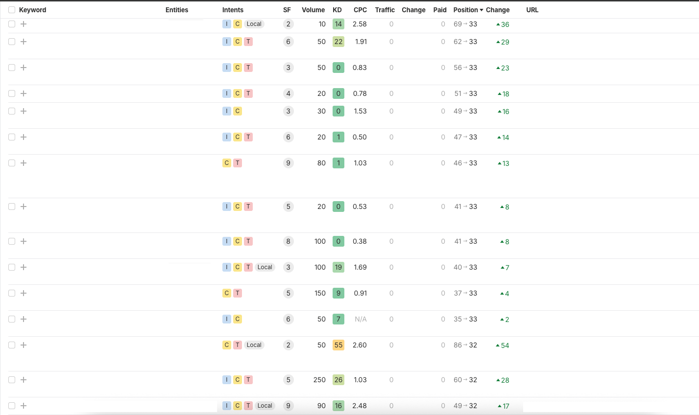

ბიზნესი Google-ზე იყო დამოკიდებული, მაგრამ ტექნიკური შეცდომის გამო ჯარიმა ჰქონდა მიღებული. სერვისის გვერდი საერთოდ არ ჩანდა ძიებაში. ჩვენ აღვადგინეთ პოზიციები და მთავარი ქივორდისთვის ტოპ 3-ში მოვხვდით.
როდესაც შენი ბიზნესი თითქმის სრულად ეყრდნობა Google-ს, როგორც ლიდების მთავარ წყაროს, საძიებო სისტემაში ხილვადობის დაკარგვა მხოლოდ ტექნიკური პრობლემა აღარ არის, ეს პირდაპირი დარტყმაა შემოსავლებზე — თან განსაკუთრებით მაშინ, როცა საქმე ეხება ნიშურ ინდუსტრიას, სადაც ფეისბუქის ან სხვა პლატფორმების რეკლამა პრაქტიკულად არ მუშაობს და მომხმარებელი მომსახურების მისაღებად კონკრეტულ საკვანძო სიტყვას ეძებს.
სწორედ ასეთ სიტუაციაში აღმოჩნდა ჩვენი კლიენტი — B2B სეგმენტში მოქმედი კომპანია, რომელიც შრომის უსაფრთხოების სფეროში ბაზარს მაღალკვალიფიციურ საკონსულტაციო მომსახურებას სთავაზობს.
ჩავატარეთ დეტალური SEO აუდიტი, რომლის მიზანი იყო გაგვერკვია, რატომ არ ჩანდა კლიენტის სერვისის გვერდი იმ ქივორდზე, რომელიც მათთვის ლიდების მთავარი წყაროა. აღმოჩნდა, რომ გვერდს ჰქონდა გუგლის ე.წ. "პენალტი" — ძველი ტექნიკური შეცდომის შედეგად, სისტემა გვერდს არასწორად აფასებდა და საერთოდ არ აჩვენებდა მას საძიებო შედეგებში. საინტერესო იყო ისიც, რომ ბლოგპოსტი, რომელიც თემატურად ნაკლებად რელევანტური იყო, მაინც ირანკებოდა SERP-ში, თუმცა მხოლოდ მე-3 გვერდზე, რაც ტრაფიკს პრაქტიკულად არ ქმნიდა.
პირველ ეტაპზე ჩავატარეთ სიღრმისეული ტექნიკური აუდიტი. აღმოვაჩინეთ, რომ ძველი ტექნიკური შეცდომა Google-ის ჯარიმის მიზეზი იყო. ეს იყო კრიტიკული პრობლემა, რომლის გარეშეც ვერანაირი ოპტიმიზაცია ვერ იმუშავებდა.
შევცვალეთ URL სტრუქტურა, განვაახლეთ მეტა სათაურები და აღწერები. ძველი ბლოგ პოსტიდან სერვისის გვერდზე 301 რედირექტი დავაყენეთ, რათა მთელი „ძალა" სწორ გვერდზე გადასულიყო.
საიტის შიდა სტრუქტურა გავამაგრეთ — სხვა გვერდებიდან სერვისის გვერდზე სტრატეგიული ბმულები დავამატეთ. ეს Google-ს ეუბნება, რომ ეს გვერდი მთავარია ამ თემაზე.
რელევანტური წყაროდან მაღალი ხარისხის ბექლინკი მოვიპოვეთ. შემდეგ დამატებითი ბექლინკების აგება გავაგრძელეთ, პარალელურად კონტენტს ვამდიდრებდით. რამდენიმე დღეში გვერდი მე-10 პოზიციაზე დაბრუნდა.
პირველ რიგში, გადავხედეთ URL სტრუქტურას — სერვისის გვერდის მისამართი შევცვალეთ ისე, რომ ის მაქსიმალურად მიახლოებული ყოფილიყო მიზნობრივ საკვანძო თემასთან. პარალელურად, განახლდა მეტა სათაურები და მეტა აღწერები, რამაც Google-ს პირდაპირ გაუგზავნა სიგნალი გვერდის მნიშვნელობისა და შინაარსის შესახებ.
ტექნიკური ჩარევიდან რამდენიმე დღეში უკვე გამოჩნდა პირველი პოზიტიური სიგნალები. Google-მა დაიწყო გვერდის რეინდექსაცია, რაც იმას ნიშნავდა, რომ სისტემამ აღიქვა ცვლილებები და მზად იყო გვერდის ხელახალი შეფასებისთვის. მალევე, სერვისის გვერდი პირველად გამოჩნდა საძიებო შედეგებში მე-10 პოზიციაზე. ეს იყო გარდამტეხი მომენტი: გვერდი, რომელიც მანამდე საერთოდ არ ჩანდა SERP-ში, 10xSEO-მ თამაშში დააბრუნა.
ორი თვის თავზე გვერდმა სწორედ იმ სივრცეში დაიმკვიდრა ადგილი, სადაც მისი არსებობა ყველაზე მნიშვნელოვანია — მესამე პოზიციაზე, იმ ქივორდზე, რომელიც კლიენტისთვის ლიდების პირდაპირი გენერატორია. ეს მხოლოდ დასაწყისია — სტრატეგია გათვლილია არა მხოლოდ პოზიციის შენარჩუნებაზე, არამედ მის გაუმჯობესებაზე. ჩვენი შემდეგი მიზანი უკვე განსაზღვრულია: პირველი პოზიცია იმ ქივორდზე, რომელიც კლიენტისთვის ყველაზე მაღალი კომერციული პოტენციალის მომტანი იქნება.


მოითხოვეთ უფასო SEO აუდიტი — გავარკვევთ პრობლემის მიზეზს და აღვადგენთ თქვენს პოზიციებს